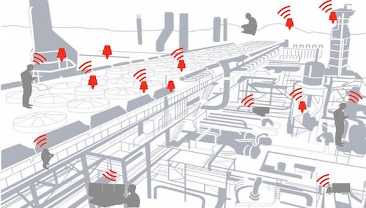
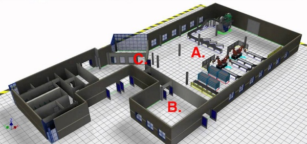

一种部署在工厂、仓库等复杂地形的无线传感器网络
行业背景
近年来，工厂仓库发生过多起重大火灾事故，如2015年1月，哈尔滨市道外区太古街与南勋街合围地段一仓库起火近10小时；2015年8月，位于天津滨海新区塘沽开发区的瑞海国际物流有限公司所属的危险品仓库发生火灾和爆炸。
工厂仓库火灾的常见有几个原因：
- （一）违反操作规程。如焊接、烘烤、熬炼，戒在禁止产生火花的场所穿带铁钉的鞋、敲打铁器。乱丢未熄灭的火柴、烟头、火灰复燃等引起的火灾。
- （二）用火设备不良。如炉灶、火炕、火墙、烟囱等不符合防火要求，靠近可燃结构，戒年久失修，裂缝窜火，引起可燃材料起火。
- （三）电气设备、静电、雷电起火。如电气设备及其安装不合乎规格、绝缘不良，赸负荷，电气线路短路。例如转动的皮带、沿导管流动的易燃液体、可燃粉尘等，都易产生静电。
- （四）自燃起火。浸油的棉织物，泥炭、煤埼等通风不良，以及硝化纤维胶片、硫化亖铁、黄磷、磷化氢等，都易自燃起火。
星星之火可以燎原，我们看到很多火灾不是瞬间发生的，其源头可能就是一个很小的火苗。现在，不少国外企业采用了物联网技术手段，将传感器分布在工厂和仓库，这些传感器全天候检测着温度、湿度、烟雾、或是一些有毒有害元素，如果检测数据超标，及时报警或者进行应急处理，继而抑制灾难的发生。相比于安保人员人工的巡查，物联网技术更加智能化和自动化，有效地达到了防范于未然的目的，保护了人民的生命财产安全。
以下，我们探讨一种部署在工厂、仓库的无线传感器网络。
方案概述
无线传感器节点由一个传感器、一个单片机和一个无线通信模块组成。传感器挂载在单片机的ADC或者总线上，根据不同的场景需求适配不同类型的传感器。无线通信模块将单片机采集到的传感器数据发射到网络中去：
近些年来，物联网无线通信技术大力发展，常见的通信技术或者标准有：Sub-GHz、Wi-Fi、2.4GHz、蓝牙、ZigBee等。相比于有线网络连接的方式，无线网络更加适合用于工厂和仓库，因为每一个传感器节点可以自由的或临时的加入或者退出网络，部署更方便、灵活，满足各类工厂和仓库的场景需求。
对于地形简单的工厂或者仓库，使用星型拓扑结构就可以把整个网络覆盖起来。如果希望传输距离远一些，可以使用低频段的Sub-GHz无线通信技术(如433MHz）。然而，很多时候工厂或仓库的可能不是一个规则形状的布局，亦或是内部隔离了多个区域，星型拓扑组成的无线信号难以完整覆盖。我们考虑如下一个场景：
上述场景中，A区域是一个相对开阔的区域，分布在该区域的传感器可以组建起星型拓扑的无线网络。但是，如果要让分布在B区域的传感器节点也加入网络就有些难度了，因为A区域和B区域之间隔了几个墙面，考虑到工厂墙面的材质应该较为硬实，会对无线信号造成较大的衰减。即使使用了低频段无线信号，也不能保证全面的信号覆盖。为此，我们可以在C区域加入一个“路由节点”，C区域和A区域联通，C区域和B区域也联通，相当于一个信号从A区域到B区域的中继器。然而，相比于传统的信号中继器器，路由节点不仅仅是单纯的接力或者放大信号，而且对信号是有选择有方向进行中继，这样会使得整个无线网络更为稳健和鲁棒。
通过引入路由节点，一个适用于工厂、仓库等复杂地形的无线传感器网络组建而成，我们可以看到它的网络拓扑结构：

上图的网络拓扑结构称之为“MESH网络”，其中，黄点是无线传感器节点，绿点是无线路由节点，红点是网关或者中控设备。我们自主开发了MESH网络的路由算法，无线通信基于2.4GHz私有网络，传感器节点将采集到的传感器数据广播出来，路由节点收到后，将数据传输到网关或者中控设备。
整个网络中，传感器节点支持纽扣电池供电，续航时间可达一年以上。相比于Zigbee或433MHz无线通信技术，基于私有2.4GHz的无线传感器节点具有成本更低、体积小巧等优势。
技术指标
传感器节点/路由节点 规格
- MCU芯片型号：STM32F030F4；
- 2.4GHz芯片型号：nRF24LP01/SI24R1；
- 传感器：可适配；
- 数据传输速率：2Mbps/1Mbps/250Kbps；
- 传输距离：100米@板载PCB天线；
- 续航时间：1年@CR2032纽扣电池；
- 无线网络支持节点数量：50000个；
- PCBA体积：2CM*3CM*1CM；
服务内容
- 无线传感器网络方案定制；
- 传感器选型和适配；
- 传感器节点/路由节点的PCBA；
- 无线传感器网络网关或网关接口；
- 无线传感器网络云服务；
方案咨询
请发邮件至hello@jumacc.com，客服人员会和您联系。